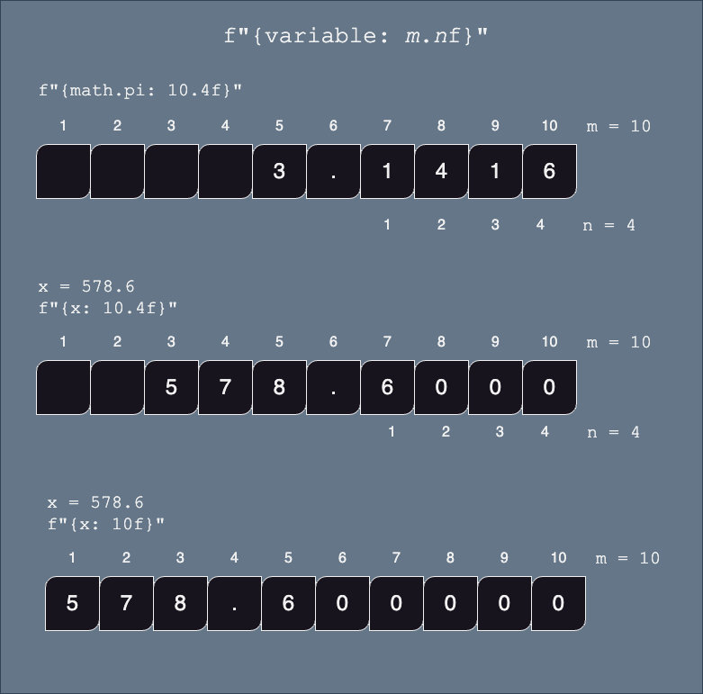
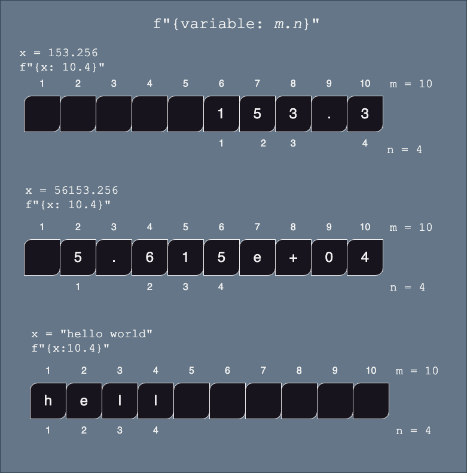

Select the appropriate f-string formatting (not memorize) to achieve the expected output.
This topic is not part of the final assessment, but might be useful for some assignments.
This section is about how to format numbers within an f-string.
Within the {...} part of the f-string, we can specify how we want our numbers or strings to be formatted (example: left or right aligned, number of characters printed, precision (how many digits) etc.)
NoteBASIC SYNTAX: {variable: format string}
notice that the variable name is followed by a colon : and then a format string which is used to define how to format your output.
Length (or padding)
NoteBASIC SYNTAX: {expression: m}
expression (variable or python expression) must have type int or float or str
m is the minimum numbers of characters of the resulting string. It will be padded with spaces if necessary.
int and float will be padded so that the number is right aligned
str will be padded so that the string will be left aligned
Floating Point Numbers
To control the decimal places of a float, use the :m.nf format.
NoteBASIC SYNTAX: {expression: m.nf}
expression (variable or python expression) must have type int or float
m is the minimum numbers of characters of the resulting string. It will be padded with spaces if necessary.
if m is not specified, then the length of the string will be dependent on the size of the number (i.e. no extra padding)
.n is the required precision (number of digits after the decimal point).
if not specified, then zeros will be used to pad the number to accommodate the width of the string

Examples
x =375.2print( f"{x: .3f}" ) # 'm' is not specified, so only worry about number of digits after decimal pointprint( f"{x: 6.3f}" ) # the printed number will be greater than 6 digits, so the '6' is ignoredprint( f"{x: 10.3f}" ) # use at least 10 characters for this string, right alignedprint( f"{x: 10} ") # use default number of digits after the decimal point
375.200
375.200
375.200
375.2
For example, here are a few lines that print the value of pi at different precisions:
pi =3.141592653589793print("The value of pi without formatting: ", pi) print(f"The value of pi with two decimal places: {pi:.2f}")print(f"The value of pi with three decimal places: {pi:.3f}")print(f"The value of pi with four decimal places: {pi:.4f}")print(f"The value of pi with four decimal places: {pi:,.4f}")
The value of pi without formatting: 3.141592653589793
The value of pi with two decimal places: 3.14
The value of pi with three decimal places: 3.142
The value of pi with four decimal places: 3.1416
The value of pi with four decimal places: 3.1416
Scientific Notation
NoteBASIC SYNTAX: {expression: m.ne}
expression (variable or python expression) must have type int or float
m is the minimum numbers of characters of the resulting string. It will be padded with spaces if necessary. Note that one space is always reserved for the + symbol, even if it is not displayed.
if m is not defined, then the length of the string will be dependent on the size of the number (i.e. no extra padding)
n is the required precision (number of digits after the decimal point).
if not specified, then zeros will be used to pad the number to accommodate the width of the string (+2) WEIRD!
Generic Precision
Values that represent a given measurement in your program might need to be rounded to keep the significant figures/digits, regardless of the output format (scientific notation, or not).
NoteBASIC SYNTAX: {expression: m.n}
expression (variable or python expression) must have type float or str
m is the minimum numbers of characters of the resulting string. It will be padded with spaces if necessary.
if m is not defined, then the length of the string will be dependent on the size of the number (i.e. no extra padding)
n is the number of significant digits (not the number of digits after the decimal point)
.n is the required precision (number of digits after the decimal point).
WEIRD: if expression is a string, then there can be no space between the : and the m.n
Python will determine which is the most appropriate representation

Examples
For example, let’s take the length of an object measured with a ruler graduated to 1 mm:
length =153.256# in mm
Only 4 digits are said to significant.
To control the just number of significant digits, you may use :. without an “f” (as opposed to floating precision).
length =153.256# in mmprint(f"The length of the object is {length:.4}")
The length of the object is 153.3
Thousands Separator:
NoteBASIC SYNTAX: {float_or_integer_variable: ,} or {float_or_integer_variable: _}
This is useful to format large numbers such as 10,000,000 or 10_000_000
For instance, here’s the population of the United States:
population_usa =340_110_088print(f'The population of the usa without formatting {population_usa}')print(f'The population of the usa in scientific notation {population_usa:_}')print(f'The population of the usa with commas {population_usa:,}')
The population of the usa without formatting 340110088
The population of the usa in scientific notation 340_110_088
The population of the usa with commas 340,110,088
Alignment
When the minimum width of the string is specified (using the m argument), the resulting string will be padded with spaces.
We can control whether the spaces are padded to the right or left or evenly on both sides of the value.
To control the decimal places of a float, use the :m.nf format.
NoteBASIC SYNTAX: {*expression: [><^]m ...}
*[<>^] means either >, or <, or ^
> aligns the value to the right (default for floats and ints)
< aligns the value to the left (defulat for strs)
expression (variable or python expression) must have type int or float or str
m is the minimum numbers of characters of the resulting string. It will be padded with spaces if necessary.
... refers to any other specific formatting instructions, such as .nf for floating point, etc.
Example
x=35.2print( f"not formatted: {x}")print( f"minimum size of 10 right aligned: '{x:10}' ")print( f"minimum size of 10, 2 decimal - right aligned: '{x:>10.2f}' ")print( f"minimum size of 10 left aligned: '{x:<10}' ")print( f"minimum size of 10, 2 decimal - left aligned: '{x:<10.2f}' ")print( f"minimum size of 10 centered: '{x:^10}' ")print( f"minimum size of 10, 2 decimal - centered: '{x:^10.2f}' ")
not formatted: 35.2
minimum size of 10 right aligned: ' 35.2'
minimum size of 10, 2 decimal - right aligned: ' 35.20'
minimum size of 10 left aligned: '35.2 '
minimum size of 10, 2 decimal - left aligned: '35.20 '
minimum size of 10 centered: ' 35.2 '
minimum size of 10, 2 decimal - centered: ' 35.20 '
🎯 Test Myself: Print the receipt of the following transaction: price of item1, item2, item3, the subtotal, the tax amount and the total.
We wish to have all the numbers of the receipt aligned to the right.